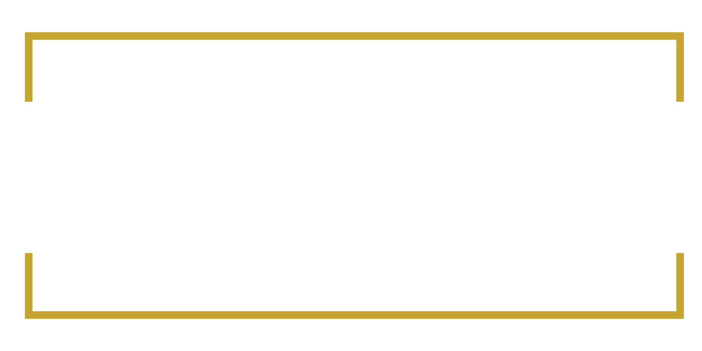
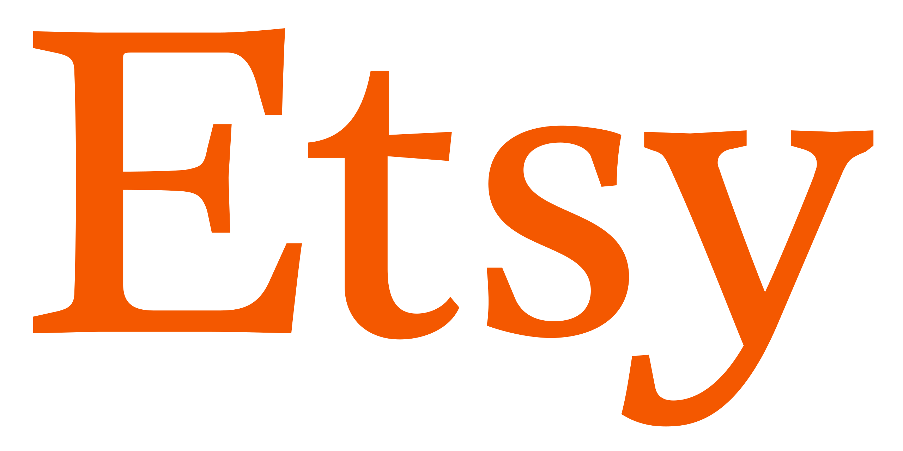
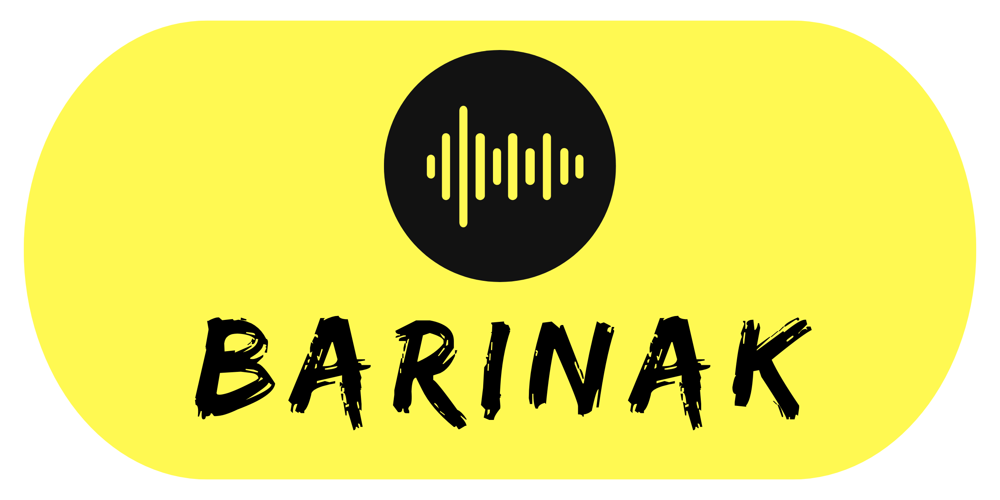

Etsy Sales Experience
Over 6 years, I made more than 3000 sales on Etsy. I sold home decor, sweatshirts, t-shirts, women’s apparel, men’s and women’s underwear, socks, vintage jerseys, digital design products, and most recently, digitally designed t-shirts and sweatshirts.
Etsy Consulting Experience
Following the post-pandemic e-commerce boom, I supported entrepreneurs in the US, Europe, and Turkey who wanted to sell on Etsy. I provided services like store setup, product upload, social media, and digital marketing.
Event & Venue Consulting
I founded BARınak and organized 6 events with 200+ attendees. I helped venues attract first customers and increase revenue with consulting strategies.